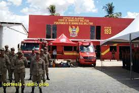
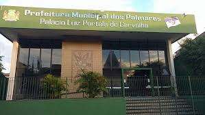
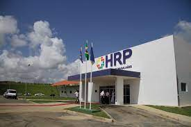
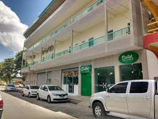

Serviços
Serviços na Cidade
Oferece serviços relacionados a saúde, como Hospitais, postos de saúde, Samu e Clinicas de Saúde. serviços relacionados a segurança como Corpo de Bombeiros. existe também Bestaurantes, pizzaria, hoteis e a Prefeiturada Cidade.
Informações sobre Corpo de Bombeiros Militar de Pernambuco em Palmares, PE:
Estamos no endereço Avenida Senador Marcos Freire no bairro Av Senador Marcos Freire na cidade de Palmares.
Corpo de Bombeiros
Prefeitura Municipal de Palmares (PE)
Na Prefeitura Municipal de Palmares, estão instalados o Gabinete do prefeito e do vice-prefeito, além de secretarias e órgãos. O prefeito que como chefe do Executivo municipal, exerce a função de administrar os serviços públicos locais.
No local, o contribuinte tem acesso a serviços como: Nota Fiscal Eletrônica Prefeitura de Palmares; Declaração de Serviço; Emissão da 2ª via do IPTU da Prefeitura Municipal de Palmares; Consulta de Processos; Diário Oficial; entre outros.
Prefeitura Palmares
Hospital Regional de Palmares
O Hospital Regional de Palmares Dr. Sílvio Magalhães - HRP, reinaugurado no dia 10 de dezembro de 2011, está localizado no Km 185 da BR 101, no Engenho Quilombo dos Palmares, sendo referência para 22 cidades da Mata Sul do Estado de Pernambuco: Água Preta, Amaraji, Barreiros, Belém de Maria, Catende, Cortês, Escada, Gameleira, Jaqueira, Joaquim Nabuco, Lagoa dos Gatos, Maraial, Palmares, Primavera, Quipapá, Ribeirão, Rio Formoso, São Benedito do Sul, São José da Coroa Grande, Sirinhaém, Tamandaré e Xexéu, abrangendo uma população de 6.047.678 habitantes.
Hospital Regional
Posto de Saúde
Hotel Destak
Policia da cidade